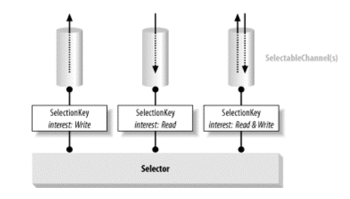

1.NIO与IO的区别？
| IO | NIO |
|---|---|
| 面向流 | 面向缓冲 |
| 阻塞IO | 非阻塞IO |
| 无 | 选择器 |
2. NIO中的读和写
2.1 从文件中读取
读取文件的三个步骤
从FileInputStream获取channel
FileInputStream fin = new FileInputStream("readandshow.txt"); FileChannel fc = fin.getChannel();创建Bufffer
ByteBuffer buffer = ByteBuffer.allocate(1024);将数据从channel读取到buffer中
fc.read(buffer);
2.2 写入文件
写入文件的三个步骤
从FileOutputStream获取channel
FileOutputStream fout = new FileOutputStream("writessomebytes.txt"); FileChannel fc = fout.getChannel();创建缓冲区（Buffer）并且存放对象
ByteBuffer buffer = ByteBuffer.allocate(1024); for(int i=0; i <message.length; ++i){ buffer.put(message[i]); } buffer.flip();写入缓冲区
fc.write(buffer);
3 缓冲区的内部细节
- NIO中有两个重要的缓冲区组件：状态变量和访问方法。
- 每一次读/写操作都会改变缓冲区的状态。状态变量通过记录和跟踪这些变化，缓冲区就能够内部地管理自己的资源。
- 从通道读取数据时，数据被放入缓冲区。在某些情况下，可以将这个缓冲区直接写入另一个通道，但是在一般情况下，您还需要查看数据，使用get()完成。同样，如果要将原始数据放入到缓冲区中，就需要使用put()方法。
3.1 状态变量
可以使用三个值来指定缓冲区在任意时刻的状态：
- position
- limit
- capacity
这三个变量一起可以跟踪缓冲区的状态和它包含的数据。
Position
- 缓冲区是就上就是美化了数组。在从通道读取时，您将所读的数据放到底层的数组中。position变量跟踪已经写了多少数据。更准确的说，它指定了下一个字节将放到数组的那一个元素中。因此，如果您从通道中读三个字节到缓冲区。那么缓冲区的position将会设置3，指向第四个元素。
Limit
- limit变量表明还有多少数据需要取出（从缓冲区写入通道中），或者还有多少空间可以放入数据
- position<=limit
Capacity
- 缓冲区的capacity表明可以存储在缓冲区的最大数据容量。实际上，它指定了底层数组的大小。
- limit<=capacity
缓冲区的使用
使用缓冲区将数据从输入通道拷贝到输出通道
while (true) { buffer.clear(); int r = fcin.read( buffer ); if (r==-1) { break; } buffer.flip(); fcout.write( buffer ); }
4 缓冲区的其他知识点
4.1 缓冲区的分配以及包装
在能够读以及写之前，必须有一个缓冲区。要创建缓冲区，就需要分配缓冲区。分配缓冲区使用的是allocate()来分配缓冲区：
ByteBuffer buffer = ByteBuffer.allocate(1024);allocate()方法分配一个具有指定大小的底层数组，并将它包装到一个缓冲区对象中，在上面代码中采用的是
ByteBuffer也可以将现有的数组转换为缓冲区，如下所示：byte array[] = new byte[1024]; ByteBuffer buffer = ByteBuffer.wrap(array);
4.2 缓冲区分片
slice()方法根据现有的缓冲区创建一种子缓冲区。也就是说，它创建一个新的缓冲区，新缓冲区和原来的缓冲区的一部分数据共享，如下所示：
创建一个长度为10的
ByteBufferByteBuffer buffer = ByteBuffer.allocate(10);
然后使用数据来填充这个缓冲区，在第n个槽中放入数字n:
for(int i=0; i<buffer.capacity(); ++i){ buffer.put((byte)i); }现在对这个缓冲区分片，以创建一个包含3到6的子缓冲区。在某种意义上，子缓冲区就像原来的缓冲区中的一个窗口。窗口的开始和结束位置通过position和limit值来设定，然后调用Buffer的slice()方法：
buffer.position(3); buffer.limite(7); ByteBuffer slice = buffer.slice();- 片段是元缓冲区的子缓冲区，并且我们知道缓冲区和子缓冲区共享同一个底层数据数组。
4.3 缓冲区分片和数据共享
- 缓冲区中的子缓冲区发生了改变之后，缓冲区中对应的子缓冲区所修改的也会相应的修改。
4.4 只读缓冲区
- 只读缓冲区只能读取，可以通过调用缓冲区的asReadOnlyBuffer()方法，将任何常规缓冲区转换为只读缓冲区。
- 只读缓冲区对于数据的保护很有用，并且可以保证缓冲区不被修改。
- 不能将只读缓冲区转换为可写的缓冲区。
4.5 直接和间接缓冲区
- 另外一种有用的ByteBuffer是直接缓冲区。直接缓冲区是为了加快I/O速度，而已一种特殊的方式分配其内存的缓冲区。
- 内存映射文件可以创建直接缓冲区。
4.6 内存映射文件I/O
- 内存映射文件I/O是一种读和写文件数据的方法，它可以比常规的基于流或者基于通道的I/O快得多。
- 内存映射文件I/O是通过使文件中的数据出现在内存数组来完成的。
4.6 将文件映射到内存
将一个FileChannel(它的全部或者部分)映射到内存中。为此我们将使用FileChannel。map()方法，如下所示：
MappedByteBuffer mbb = fc.map(FileChannel.MapMode.READ_WRITE, 0, 1024);
5 连网和异步I/O
5.1 异步I/O
- 异步I/O是一种没有阻塞的读写数据的方法。异步I/O也不会阻塞。异步I/O允许用户根据大量的输入和输出执行I/O。
5.2 Selectors
- Selector选择器类管理着一个被注册的通道集合的信息和他们的就绪状态。通道和选择器一起被注册，并且使用选择器来更新通道的就绪状态。当这么做的时候，可以选择将被激发的线程挂起，直到有就绪的状态。
其中异步I/O的核心对象是Selector。
Selector selector = Selector.open();之后在对不同的通道对象调用register()方法。以便注册我们对这些对象中发生的I/O事件的兴趣。register()的第一个参数是Selector。

5.3 打开一个ServerSocketChannel
为了接收连接，我们需要一个ServerSocketChannel。加您给一个端口都需要一个ServerSocketChannel。对于每一个端口，我们打开一个ServerSocketChannel，如下所示：
ServerSocketChannel ssc = ServerSocketChannel.open(); ssc.configureBlocking( false ); ServerSocket ss = ssc.socket(); InetSocketAddress address = new InetSocketAddress(ports[i]); ss.bind(address);- 第一行创建一个新的ServerSocketChannel，最后三行将它绑定到给定的端口。第二行ServerSocketChannel设置为非阻塞的。必须对每一个要使用的套接字通道调用这个方法，否则异步I/O就不能工作。
5.4 选择键
将上面步骤打开的ServerSocketChannels注册到Selector上，为此使用的方法是ServerSocketChannel.register()方法，如下所示：
SelectionKey key = ssc.register(selector, SelectortKey.OP_ACCEPT);- register()第一个参数总是这个Selector。第二个参数是OP_ACCEPT，这里它指定我们想要监听accept事件，也是在新的连接建立时所发生的事件。这里适用于ServerSocketChannel的唯一事件类型。
- SelectionKey代表这个通道在此Selector上的这个注册。当某个Selector通知传入事件的时候，通过提供对该事件的SelectionKey来进行，还可以取消通道注册。
5.5 内部循环
现在已经注册了我们对一些I/O事件，在主循环中，使用Selectors的几乎每个程序都像下面这样使用内部循环：
int num = selector.select(); Set selectionKeys = selector.selectedKeys(); Iterator it = selectkeys.iterator(); while(it.hasNext()){ SelectionKey key = (SelectionKey)it.next(); //.. deal with I/O even... }
5.6 监听新的连接
使用SelectionKey调用readOps()方法，并检查发生了什么类型的事件：
if(key.readOps() & SelectionKey.OP_ACCEPT == SelectionKey.OP_ACCEPT){ // accept new connection }
6 基本概念
6.1 什么是Selector以及SelectionKey？
- Selector（选择器）：是javaNIO中能够检测出一到多个NIO通道，并能够知晓通道是否为诸如读写事件做好准备的组件。这样一个单独的线程可以管理多个channel，从而管理多个网络连接。
- SelectionKey： 表示SelectableChannel在Selector中的注册的标记/句柄
-